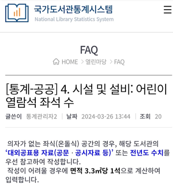

전국도서관 표준데이터를 중심으로 한
도서관 통계 지표의 모호성
Team 3 김민서 이선우 정예주 정석원
통계 지표란?
통계지표(statistical indicator)는 특정 시간이나 장소, 그리고 기타 특정 사항에 대한
통계 데이터를 표현할 수 있도록 지정된 데이터 요소를 일컫는다.

목차
-
주제 선정 이유
-
전국도서관통계 지표의 모호성 (1) 열람좌석수
-
전국도서관통계 지표의 모호성 (2) 대출가능권수
-
전국도서관통계 지표의 모호성 (3) 건물면적과 부지면적
-
지표 모호성의 문제점과 통계 지표의 명확화 필요성
-
지표 모호성의 해결방안
-
결론 및 소감
주제 선정 이유
해당 자료는 전국도서관의 데이터가 모두 들어있기 때문에 그만큼 신뢰도가 높아야 한다고 생각한다. 그러나 자료 곳곳에 잘못된 부분과 각 도서관들끼리 통일되지 않은 부분들이 많이 보였다. 이같은 문제가 지속된다면 도서관 이용자들과 해당 데이터 사용자들에게 혼란을 안겨줄 가능성이 크다. 그렇기에 전국도서관통계자료의 문제점을 분석하고 그 해결방안을 모색해보고자 이 주제를 선정하게 되었다.

전국도서관통계 지표의 모호성
열람좌석수
'열람좌석수'에 대한 의문점
도서관에 있는 모든 좌석을 의미하는 것일까?
단순히 열람실에 있는 좌석 수를 의미하는 것일까?
이석영 뉴미디어도서관
경기도 남양주시 공공도서관, 이석영뉴미디어도서관의 열람좌석수는 615개이다. 실제로 홈페이지를 통해 좌석수에 대한 정보를 확인해보니 댄스스튜디오나 뮤직아트홀 등의 좌석까지 포함함을 알 수 있었다. 홈페이지에는 ‘좌석수 및 사용가능인원’으로 표기가 되어있는 것을 보아, 이석영뉴미디어도서관은 ‘열람좌석수‘는 수용인원으로 해석하였음을 알 수 있다.
설악도서관
경기도 가평군 공공도서관, 설악도서관의 열람좌석수는 42개이다. 2023년도에 가평군 블로그에 게시된 도서관 이용안내를 보면 열람실 내의 좌석을 포함에 도서관 전체의 좌석은 50개 이상이다. 따라서 설악도서관은 ‘열람좌석수’는 열람실 내의 좌석수로 해석하였음을 알 수 있다.
'열람좌석수'의 해석
-

-
국가도서관통계시스템의 답변
“국가도서관통계시스템의 FAQ에 올라온 질문으로 공공도서관 관계자가 데이터 작성시 열람좌석수 지표에 대해 의문을 가지고 질문을 올린 것으로 보인다. 의좌가 없는 좌식 공간의 경우는 전년도 수치 등을 참고하거나 면적 3.33m^2당 1석으로 계산하라고 답변되어있다. 즉, 열람좌석수에는 3.3m^2의 면적도 포함이 된다는 것인데, 그렇다면 이용자들이 좌석이 있을 것이라 생각하고 도서관에 방문하였다가 실제로 좌석이 남지 않아있어 곤란한 상황이 발생할 가능성이 있다.
전국도서관통계 지표의 모호성
대출가능권수
'대출가능권수'에 대한 의문점
'1인당' 대출가능권수인가?
가족 대출증으로 빌릴 수 있는 최대 대출가능권수인가?
대출가능한 자료들을 전부 말하는가?(대출가능권수=자료수)
'대출가능권수'의 여러가지 해석
'대출가능권수'의 여러가지 해석
-
경기도 고양시 마두도서관 & 일산도서관
“경기도 고양시도서관의 경우 1인당 최대 25권, (고양시 19개 시립도서관 및 17개 공립작은 도서관 중)1관당 7권 이내를 제시한다.”
=>1관당 대출가능권수로 해석한 것으로 보임 -
범어도서관
“수성구립 범어도서관의 경우 1인당 1관당 10권, 최대 30권을 기재한다.”
=>1관당 대출가능권수로 해석한 것으로 보임 -
충청남도교육청서부평생교육원
“충청남도교육청 통합도서관의 경우 총 대출권수 20권 이내에서 각 도서관별로 자유롭게 대출가능하다.”
=>최대 대출권수로 해석한 것으로 보임 -
=> 이를 통해 각 도서관마다 '대출가능권수'에 대한 해석이 다르다는 것을 알 수 있음
전국도서관통계 지표의 모호성
건물면적과 부지면적
'건물면적과 부지면적'에 대한 의문점
-건물면적과 부지면적의 기준이 모호하여
부지 면적이 건물 면적보다 큰 경우도, 반대의 경우도 있다.
-건물면적과 부지면적을 착각하여 건물면적에 부지 면적을
적은 경우도 있는 것으로 보인다.
-반대로 부지 면적만 있고 건물 면적은 없는 경우도 있다.

'건물면적과 부지면적'의 해석
지표가 모호할 때 발생하는 문제점
-
데이터에 대한 신뢰성이 훼손
연구와 분석의 결과를 왜곡시킬 수 있음. 이는 관련 연구에서 잘못된 결론을 도출하게 만들며, 결론이 실제 상황에 맞지 않을 가능성이 큼
-
수집한 데이터를 서로 비교하기 힘들다.
일관되고 명확한 데이터가 없으면 도서관 간의 비교 분석이 어려워짐.
-
데이터의 일관성 부재로 인해 의사결정을 내리기 힘들어진다.
일관성이 없는 데이터는 해석과 분석을 복잡하게 만듦. 동일한 상황에 대해 서로 다른 데이터가 존재하면, 일관된 결론을 도출하기 어려워짐.
-
잘못된 기준으로 데이터를 수집을 하는 데 있어 시간을 낭비할 수 있다.
해당 통계을 이용하는 과정에서 정확하지 못한 데이터로 인해 사서들의 업무에 지장이 생길 수 있음.
+) 통계 지표가 명확해야 할 필요성
-
데이터 관리의 자동화가 가능해짐
-
다른 데이터와의 통합 및 비교가 용이해짐
-
도서관 운영정책을 개발, 수립하거나 효율적인 도서관 평가가 가능해짐.
-
공공데이터 개방에도 이용할 수 있게됨 => 데이터의 민주화가 실현되고 해당 데이터를 활용해 수많은 2차자료들이 생성될 수 있음.
전국도서관통계 지표의 모호성
지표모호성의 해결방안
해결방안
-
'지표가 여전히 모호할 때(명확한 기준이 있는 경우)'
도서관 이용자들에게서 피드백을 받아 올바르지 않은 정보 수정
통합질문 게시판을 통해 정확한 기준을 파악하여 도서관 데이터를 기입하기 -
'지표가 여전히 모호할 때(명확한 기준이 없는 경우)'
세분화 하는 방법
Ex) 1인당 대출 가능 권수, 최대 대출 가능 권수로 각 명칭을 정확히 정의내리기
지표에 대한 확실한 기준을 만들고, 전국도서관 모두 이 기준으로 통일
열람좌석수 해결방안
-
열람실 좌석 / 열람 좌석수로 세분화 하기
열람좌석수: 대출 X 상태로 독서하기 위해 마련된 자리
-
도서관 좌석 이용 목적에 따른 구분
공부를 하기 위해서
독서를 하기 위해서 -
(바닥,의자 상관없이)
앉아서 책을 읽을 수 있는 자리는 모두 열람좌석수에 포함,
바닥은 3.3m2을 1좌석으로 간주. -
주의: 열람좌석수에 포함하지 않아야 하는 좌석들 제외하기
대출가능권수 해결방안(1)
1관당 대출가능도서 & 지역내 도서관 최대 대출가능권수로 세분화
Ex. "총 대출권수는 20권 이내이고 도서관 별로 자유롭게 이용할 수 있다.”
= 1관당 대출가능권수: 20권/ 지역내 도서관 최대 대출가능권수: 20권
Ex. “1인당 최대 25권, (고양시 19개 시립도서관 및 17개 공립작은 도서관 중)1관당 7권 이내를 제시한다.”
= 1관당 대출가능권수: 7권 / 지역 내 도서관 최대 대출가능권수: 25권
대출가능권수 해결방안(2)
'가족회원대출제도'는 어떻게 해야 할까?
Ex. 제주 도서관: 1관당 대출가능권수= 5권 / 제주도 내 도서관 최대 대출가능권수= 30권
=> 4인 가족인 경우는 가족회원제도를 통해 개인이 20권까지 빌릴 수 있게 함
가족 인원수에 따라 대출가능권수가 제한되므로 1인당 대출권수가 늘어나는 건 X.
대신 ‘가족회원제도 시행 여부’에 대해 기재 => 이용자가 가족의 대출증으로 몇권 더 빌릴 수 있는지 계산가능
건물 면적 & 부지 면적 해결방안
명확하게 정의 내리기
부지면적 = 도서관만의 면적
(화장실 등을 제외하고 오직 도서관 기능으로써 활용하는 면적만)
건물면적 = 도서관을 포함한 도서관이 위치한 건물 전체의 면적
*주의 : 항상 건물면적 > 부지면적
복층일 때는? 건물면적과 부지면적을 연면적으로 계산하기
연면적 = 하나의 건축물의 바닥면적의 합계로, 쉽게 말해서 층별 면적을 전부 합한 것